【CNN】很詳細的講解什麼以及為什麼是卷積（Convolution）！
編輯：深度學習自然語言處理
1、對卷積的困惑
卷積這個概念，很早以前就學過，但是一直沒有搞懂。教科書上通常會給出定義，給出很多性質，也會用例項和圖形進行解釋，但究竟為什麼要這麼設計，這麼計算，背後的意義是什麼，往往語焉不詳。作為一個學物理出身的人，一個公式倘若倘若給不出結合實際的直觀的通俗的解釋（也就是背後的“物理”意義），就覺得少了點什麼，覺得不是真的懂了。
教科書上一般定義函式 f, g 的卷積 f * g(n) 如下：
連續形式：
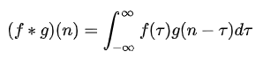
離散形式：
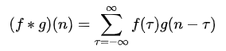
並且也解釋了，先對g函式進行翻轉，相當於在數軸上把g函式從右邊褶到左邊去，也就是卷積的“卷”的由來。
然後再把g函式平移到n，在這個位置對兩個函式的對應點相乘，然後相加，這個過程是卷積的“積”的過程。
這個只是從計算的方式上對公式進行了解釋，從數學上講無可挑剔，但進一步追問，為什麼要先翻轉再平移，這麼設計有何用意？還是有點費解。
在知乎，已經很多的熱心網友對卷積舉了很多形象的例子進行了解釋，如卷地毯、丟骰子、打耳光、存錢等等。讀完覺得非常生動有趣，但過細想想，還是感覺有些地方還是沒解釋清楚，甚至可能還有瑕疵，或者還可以改進（這些後面我會做一些分析）。
帶著問題想了兩個晚上，終於覺得有些問題想通了，所以就寫出來跟網友分享，共同學習提高。不對的地方歡迎評論拍磚。。。
明確一下，這篇文章主要想解釋兩個問題：
1. 卷積這個名詞是怎麼解釋？“卷”是什麼意思？“積”又是什麼意思？
2. 卷積背後的意義是什麼，該如何解釋？
2、考慮的應用場景
為了更好地理解這些問題，我們先給出兩個典型的應用場景：
1. 訊號分析
一個輸入訊號f(t)，經過一個線性系統（其特徵可以用單位衝擊響應函式g(t)描述）以後，輸出訊號應該是什麼？實際上通過卷積運算就可以得到輸出訊號。
2. 影像處理
輸入一幅影像f(x,y)，經過特定設計的卷積核g(x,y)進行卷積處理以後，輸出影像將會得到模糊，邊緣強化等各種效果。
3、對卷積的理解
對卷積這個名詞的理解：所謂兩個函式的卷積，本質上就是先將一個函式翻轉，然後進行滑動疊加。
在連續情況下，疊加指的是對兩個函式的乘積求積分，在離散情況下就是加權求和，為簡單起見就統一稱為疊加。
整體看來是這麼個過程：
翻轉——>滑動——>疊加——>滑動——>疊加——>滑動——>疊加.....
多次滑動得到的一系列疊加值，構成了卷積函式。
卷積的“卷”，指的的函式的翻轉，從 g(t) 變成 g(-t) 的這個過程；同時，“卷”還有滑動的意味在裡面（吸取了網友李文清的建議）。如果把卷積翻譯為“褶積”，那麼這個“褶”字就只有翻轉的含義了。
卷積的“積”，指的是積分/加權求和。
有些文章只強調滑動疊加求和，而沒有說函式的翻轉，我覺得是不全面的；有的文章對“卷”的理解其實是“積”，我覺得是張冠李戴。
對卷積的意義的理解：
1. 從“積”的過程可以看到，我們得到的疊加值，是個全域性的概念。以訊號分析為例，卷積的結果是不僅跟當前時刻輸入訊號的響應值有關，也跟過去所有時刻輸入訊號的響應都有關係，考慮了對過去的所有輸入的效果的累積。在影像處理的中，卷積處理的結果，其實就是把每個畫素周邊的，甚至是整個影像的畫素都考慮進來，對當前畫素進行某種加權處理。所以說，“積”是全域性概念，或者說是一種“混合”，把兩個函式在時間或者空間上進行混合。
2. 那為什麼要進行“卷”？直接相乘不好嗎？我的理解，進行“卷”（翻轉）的目的其實是施加一種約束，它指定了在“積”的時候以什麼為參照。在訊號分析的場景，它指定了在哪個特定時間點的前後進行“積”，在空間分析的場景，它指定了在哪個位置的周邊進行累積處理。
4、舉例說明
下面舉幾個例子說明為什麼要翻轉，以及疊加求和的意義。
例1：訊號分析
如下圖所示，輸入訊號是 f(t) ，是隨時間變化的。系統響應函式是 g(t) ，圖中的響應函式是隨時間指數下降的，它的物理意義是說：如果在 t=0 的時刻有一個輸入，那麼隨著時間的流逝，這個輸入將不斷衰減。換言之，到了 t=T時刻，原來在 t=0 時刻的輸入f(0)的值將衰減為f(0)g(T)。
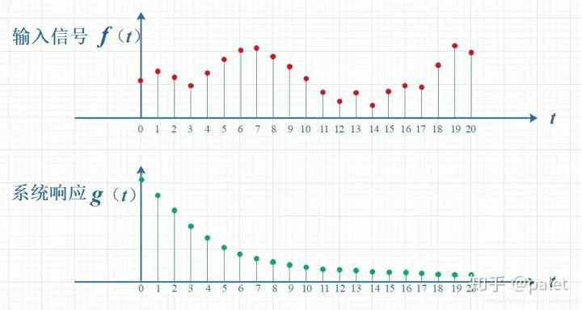考慮到訊號是連續輸入的，也就是說，每個時刻都有新的訊號進來，所以，最終輸出的是所有之前輸入訊號的累積效果。如下圖所示，在T=10時刻，輸出結果跟圖中帶標記的區域整體有關。其中，f(10)因為是剛輸入的，所以其輸出結果應該是f(10)g(0)，而時刻t=9的輸入f(9)，只經過了1個時間單位的衰減，所以產生的輸出應該是 f(9)g(1)，如此類推，即圖中虛線所描述的關係。這些對應點相乘然後累加，就是T=10時刻的輸出訊號值，這個結果也是f和g兩個函式在T=10時刻的卷積值。
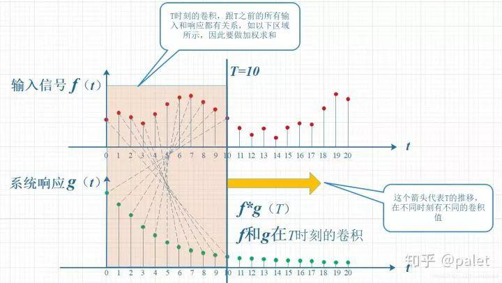顯然，上面的對應關係看上去比較難看，是擰著的，所以，我們把g函式對摺一下，變成了g(-t)，這樣就好看一些了。看到了嗎？這就是為什麼卷積要“卷”，要翻轉的原因，這是從它的物理意義中給出的。
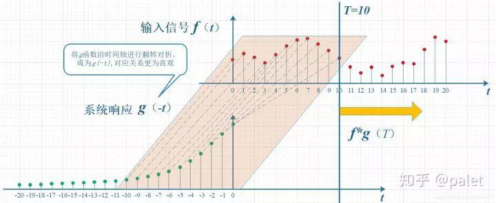上圖雖然沒有擰著，已經順過來了，但看上去還有點錯位，所以再進一步平移T個單位，就是下圖。它就是本文開始給出的卷積定義的一種圖形的表述：
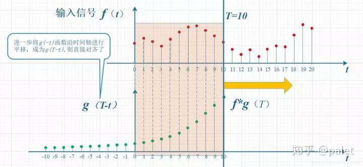所以，在以上計算T時刻的卷積時，要維持的約束就是：t+ (T-t) = T 。這種約束的意義，大家可以自己體會。
例2：丟骰子
在本問題 如何通俗易懂地解釋卷積？中排名第一的馬同學在中舉了一個很好的例子（下面的一些圖摘自馬同學的文章，在此表示感謝），用丟骰子說明了卷積的應用。
要解決的問題是：有兩枚骰子，把它們都丟擲去，兩枚骰子點數加起來為4的概率是多少?
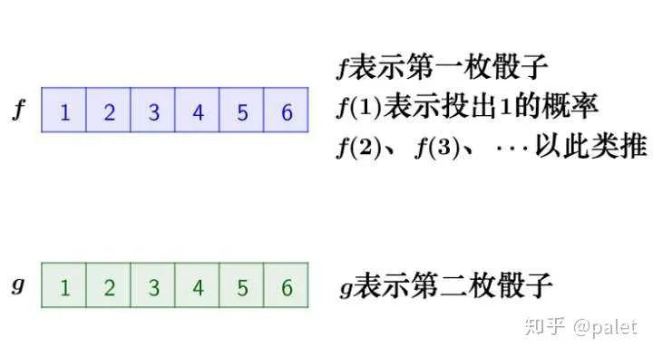分析一下，兩枚骰子點數加起來為4的情況有三種情況：1+3=4， 2+2=4, 3+1=4
因此，兩枚骰子點數加起來為4的概率為：
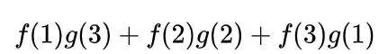寫成卷積的方式就是：
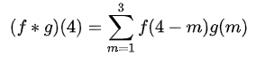
在這裡我想進一步用上面的翻轉滑動疊加的邏輯進行解釋。
首先，因為兩個骰子的點數和是4，為了滿足這個約束條件，我們還是把函式 g 翻轉一下，然後陰影區域上下對應的數相乘，然後累加，相當於求自變數為4的卷積值，如下圖所示：
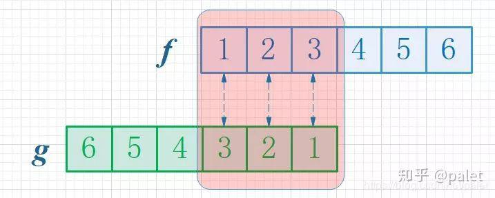進一步，如此翻轉以後，可以方便地進行推廣去求兩個骰子點數和為 n 時的概率，為f 和 g的卷積 f*g(n)，如下圖所示：
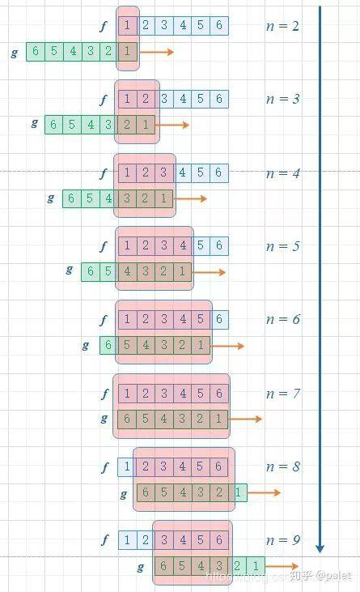由上圖可以看到，函式 g 的滑動，帶來的是點數和的增大。這個例子中對f和g的約束條件就是點數和，它也是卷積函式的自變數。有興趣還可以算算，如果骰子的每個點數出現的概率是均等的，那麼兩個骰子的點數和n=7的時候，概率最大。
例3：影像處理
還是引用知乎問題 如何通俗易懂地解釋卷積？中馬同學的例子。影像可以表示為矩陣形式（下圖摘自馬同學的文章）：
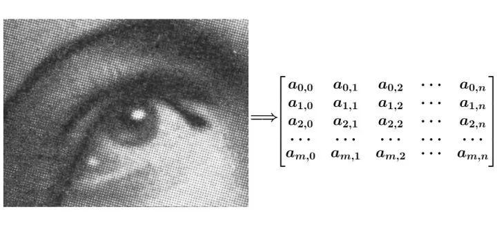對影像的處理函式（如平滑，或者邊緣提取），也可以用一個g矩陣來表示，如：
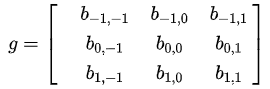
注意，我們在處理平面空間的問題，已經是二維函式了，相當於：
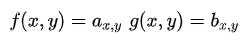
那麼函式f和g的在（u，v）處的卷積該如何計算呢？
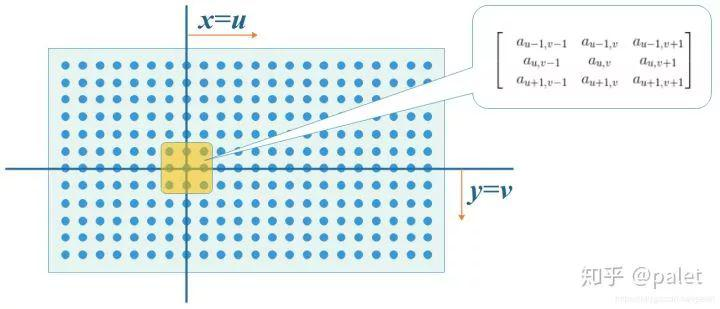首先我們在原始影像矩陣中取出（u,v）處的矩陣：
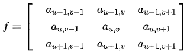
然後將影像處理矩陣翻轉（這個翻轉有點意思，不是延x軸和y軸兩個方向翻轉，而是沿右上到左下的對角線翻轉，這是為了湊後面的內積公式。），如下：
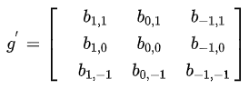
可對比下圖：
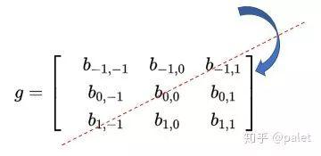計算卷積時，就可以用和的內積：
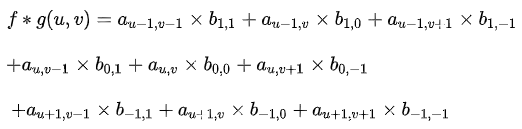
請注意，以上公式有一個特點，做乘法的兩個對應變數a,b的下標之和都是（u,v），其目的是對這種加權求和進行一種約束。這也是為什麼要將矩陣g進行翻轉的原因。以上矩陣下標之所以那麼寫，並且進行了翻轉，是為了讓大家更清楚地看到跟卷積的關係。這樣做的好處是便於推廣，也便於理解其物理意義。實際在計算的時候，都是用翻轉以後的矩陣，直接求矩陣內積就可以了。
以上計算的是（u,v）處的卷積，延x軸或者y軸滑動，就可以求出影像中各個位置的卷積，其輸出結果是處理以後的影像（即經過平滑、邊緣提取等各種處理的影像）。
再深入思考一下，在算影像卷積的時候，我們是直接在原始影像矩陣中取了（u,v）處的矩陣，為什麼要取這個位置的矩陣，本質上其實是為了滿足以上的約束。因為我們要算（u，v）處的卷積，而g矩陣是3x3的矩陣，要滿足下標跟這個3x3矩陣的和是（u,v），只能是取原始影像中以（u，v）為中心的這個3x3矩陣，即圖中的陰影區域的矩陣。
推而廣之，如果如果g矩陣不是3x3，而是6x6，那我們就要在原始影像中取以（u，v）為中心的6x6矩陣進行計算。由此可見，這種卷積就是把原始影像中的相鄰畫素都考慮進來，進行混合。相鄰的區域範圍取決於g矩陣的維度，維度越大，涉及的周邊畫素越多。而矩陣的設計，則決定了這種混合輸出的影像跟原始影像比，究竟是模糊了，還是更銳利了。
比如說，如下影像處理矩陣將使得影像變得更為平滑，顯得更模糊，因為它聯合周邊畫素進行了平均處理：
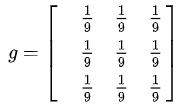
而如下影像處理矩陣將使得畫素值變化明顯的地方更為明顯，強化邊緣，而變化平緩的地方沒有影響，達到提取邊緣的目的：
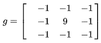
5、對一些解釋的不同意見
上面一些對卷積的形象解釋，如知乎問題 卷積為什麼叫「卷」積？中荊哲以及問題 如何通俗易懂地解釋卷積？中馬同學等人提出的如下比喻：
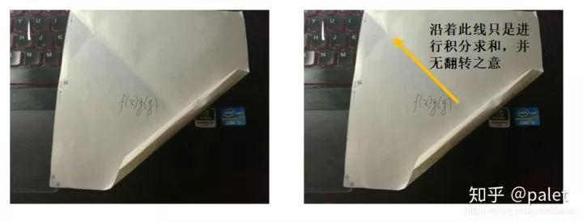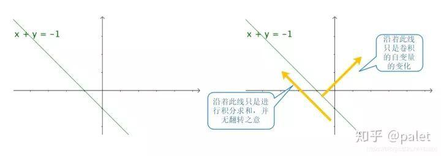
其實圖中“卷”的方向，是沿該方向進行積分求和的方向，並無翻轉之意。因此，這種解釋，並沒有完整描述卷積的含義，對“卷”的理解值得商榷。
6、一些參考資料
《數字訊號處理（第二版）》程乾生，北京大學出版社
《訊號與系統引論》 鄭君裡，應啟珩，楊為理，高等教育出版社
- END -
如果看到這裡，說明你喜歡這篇文章，請轉發、點贊。掃描下方二維碼或者微信搜尋「perfect_iscas」，新增好友後即可獲得10套程式設計師全棧課程+1000套PPT和簡歷模板，向我私聊「進群」二字即可進入高質量交流群。
↓掃描二維碼進群↓
喜歡文章，點個在看
相關文章
- 卷積神經網路中感受野的理解和計算
- 卷積神經網路CNN
- 影像篡改被動檢測技術一覽：基於特徵提取和卷積神經網路的篡改檢測
- Pytorch版Faster R-CNN 原始碼分析+方法流程詳解——訓練篇
- Ng深度學習筆記——卷積神經網路基礎
- 將圖卷積應用於關係推理
- 手寫數字圖片識別-卷積神經網路
- 實體對齊4.EMNLP2018：（GCN-Align）Cross-lingual Knowledge Graph Alignment via Graph Convolutional Networks
- 【目標檢測】2萬字詳解 RCNN系列 YOLO系列 YOLOv3程式碼實現全流程詳解 pytorch
- Python深度學習（在小型資料集上從頭開始訓練一個卷積神經網路）--學習筆記（十）
- 卷積神經網路進行影像識別
- 吳恩達深度學習：簡單卷積網路
- 吳恩達深度學習：單層卷積網路
- 吳恩達深度學習：三維卷積
- 淺析py-faster-rcnn中不同版本caffe的安裝及其對應不同版本cudnn的解決方案
- 詳解 1x1 卷積核
- Tied Block Convolution：一種共享filter的卷積形態
- 圖卷積神經網路(GCN)理解與tensorflow2.0程式碼實現
- 【深度學習原理第4篇】卷積神經網路詳解（CNN）
- CS131 homework1 使用numpy實現卷積